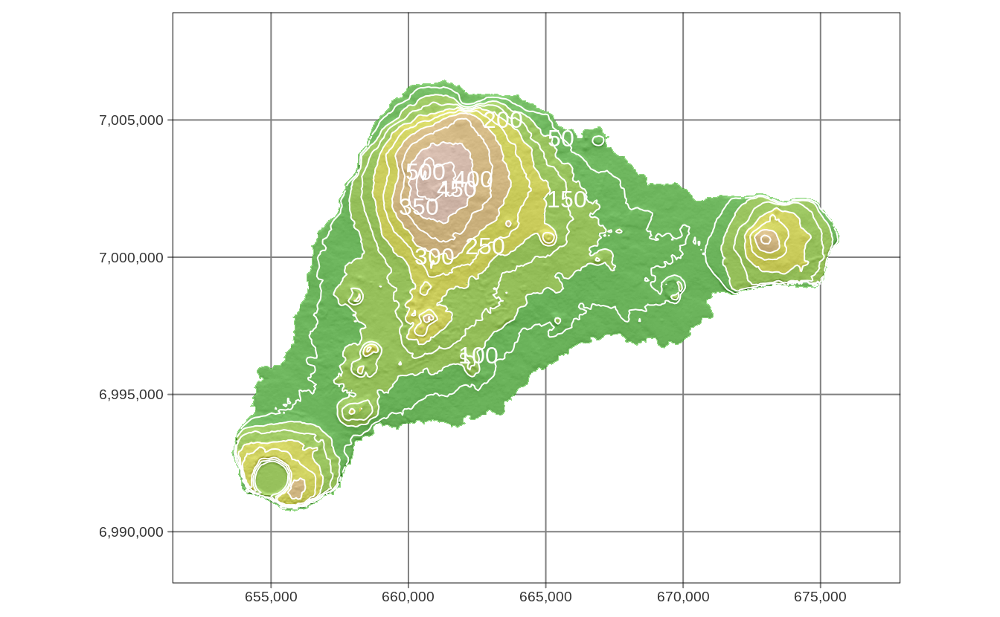

Chapter 5 Layers
| Function | Element | Geometry |
|---|---|---|
| Basic functions | ||
| tm_polygons() | polygons (borders and fill) | polygons |
| tm_symbols() | symbols | points, polygons, and lines |
| tm_lines() | lines | lines |
| tm_raster() | raster | raster |
| tm_text() | text | points, polygons, and lines |
| tm_basemap() | tile | |
| tm_tiles() | tile | |
| Derived functions | ||
| tm_borders() | polygons (borders) | polygons |
| tm_fill() | polygons (fill) | polygons |
| tm_bubbles() | bubbles | points, polygons, and lines |
| tm_dots() | dots | points, polygons, and lines |
| tm_markers() | marker symbols | points, polygons, and lines |
| tm_square() | squares | points, polygons, and lines |
| tm_iso() | lines with text labels | lines |
| tm_rgb()/tm_rgba() | raster (RGB image) | raster |
In this chapter, we focus on what map layers are available in tmap and how they differ. Chapter 6, on the other hand, is all about how to present information given in variables using colors, sizes, and shapes.
5.1 Polygons
The main function to visualize polygons is tm_polygons().
By default, it plots areas of polygons in light gray (gray85) and polygons borders in slightly dark gray (gray40).
Both, colors of areas (polygons’ fillings) and colors of borders can be modified using the col and border.col arguments (Figure 5.1:A).
tm_shape(ei_borders) +
tm_polygons(col = "lightblue",
border.col = "black", lwd = 0.5, lty = "dashed")In fact, tm_polygons() is a combination of two separate functions - tm_fill() and tm_borders().
The tm_fill() function fills polygons with a fixed color or a color palette representing a selected variable (Figure 5.1:B).
The tm_borders() function draws the borders of the polygons only (Figure 5.1:C).
It allows to change the colors of borders, their widths, or the lines type.
Notice that we have used the col argument in tm_borders(), but border.col in tm_polygons().
This is necessary to distinguish between the setting of the fillings color and the borders’ color.

FIGURE 5.1: Example of a map created with: (A) tm_polygons(), (B) tm_fill(), (C) tm_borders().
More information on colors, and how they can be applied and modified is explained in detail in Chapter 6.1.
5.2 Symbols
ei_points = read_sf("data/easter_island/ei_points.gpkg")
volcanos = subset(ei_points, type == "volcano")Symbols are a very flexible layer type. They are usually used to represent point data, but can be also used for lines and polygons. In the latter cases, they are located in centroid coordinates of each feature. Their flexibility is also related to the ways symbols can be visualized - it is possible to show values of a given variable by colors of symbols, their sizes, or shapes (more about that is explained in Chapter 6).
The tm_symbols() is the main function in tmap allowing to use and modify symbol elements (Figure 5.2).
By default, this function draws a gray circle symbol with a black border for each element of an input feature.

FIGURE 5.2: A map showing the default tmap symbols.
In the above example, each symbol is related to one feature (row) in the volcanos object.
However, in a case when we provide multi-element features (such as MULTIPOINT; section 2.2.1), each multi-element object is first split into a number of single-element features and then plotted.
The tm_symbols() is a very flexible function with a large number of arguments.
While this allows adjusting its results to almost any need, it also makes this function complicated.
Therefore, four additional layers are implemented in tmap: tm_squares(), tm_bubbles(), tm_dots(), tm_markers().
All of them use tm_symbols(), but with different default values.
tm_squares() uses square symbols (shape = 22) instead of circles (shapes = 21) (Figure 5.3:A).
(Figure 5.3:B)
The main role of tm_dots() is to present many locations at the same time.
To do this, this layer has a small size value (0.02) at the default (Figure 5.3:C).
The last additional layer is tm_markers(), which uses a marker icon by default (Figure 5.3:D).

FIGURE 5.3: Maps showing default visualizations using: (A) tm_squares(), (B) tm_bubbles(), (C) tm_dots(), (D) tm_markers().
5.3 Lines
The tm_lines() function allows to visualize different types of line data (Figure 5.4).

FIGURE 5.4: Example of a map created with tm_lines().
Lines can be presented using different colors, widths, or types (Chapter 6). This allows to show a hierarchy (for example, increased line widths for higher capacity roads) or distinguish between types of objects (for example, blue rivers comparing to gray roads).
5.4 Text
Text labels are often an integral part of many maps.
They can serve several functions, from naming features, indicating relations between them, or representing a given variable’s values.
The main function to create text labels is tm_text(), which adds a label to each spatial feature (Figure 5.5).

FIGURE 5.5: Example of a map created with tm_text().
We can adjust colors (col) and sizes (size; Section 6.2) of labels either by providing a single value or a name of a data variable.
Text labels can be modified with a set of unique arguments, including case ("upper" or "lower"), shadow (TRUE or FALSE), fontface and fontfamily.
Text labels can be added to spatial (multi-)points, (multi-)lines, and (multi-)polygons, and each of the cases is quite different. The simplest case is for POINT data, for which each text label will be located precisely in coordinates of the given points (Figure 5.5). However, how to add text labels to multipoints, lines, multilines, polygons, or multipolygons? Should each label correspond to one spatial feature, or should every sub-feature have their own label? Where should the labels be placed for lines or polygons - in the center of a line and centroid of a polygon or somewhat different?
# x2 = x %>%
# dplyr::group_by(region_un) %>%
# dplyr::summarise()
# tm_shape(x2) +
# tm_polygons() +
# tm_text("region_un")Text labels are also often presented together with lines (Section 5.3).
One example is an isopleth - a line drawn on a map through all points having the same value of a given variable, such as atmospheric pressure or elevation.
Isopleths can be created with the tm_iso() function.
# to improve
library(stars)
#> Loading required package: abind
ei_elev = read_stars("data/easter_island/ei_elev.tif")
ei_elev_raster = as(ei_elev, "Raster")
elev_isopleths = raster::rasterToContour(ei_elev_raster)
tm_shape(elev_isopleths) +
tm_iso()
#> Warning in sp::proj4string(obj): CRS object has comment,
#> which is lost in output
hs = raster::hillShade(slope = raster::terrain(ei_elev_raster, "slope"),
aspect = raster::terrain(ei_elev_raster, "aspect"))
tm_shape(hs) +
tm_grid() +
tm_raster(palette = gray(0:100 / 100), n = 100, legend.show = FALSE) +
tm_shape(ei_elev) +
tm_raster(alpha = 0.5, palette = terrain.colors(25),
legend.show = FALSE) +
tm_shape(elev_isopleths) +
tm_lines(col = "white") +
tm_text("level", col = "white")
5.5 Raster
library(stars)
ei_elev = read_stars("data/easter_island/ei_elev.tif")
ei_geomorphons = read_stars("data/easter_island/ei_geomorphons.tif")Visualization of raster data depends on the raster type (continuous or categorical), its resolution, and the number of layers.
Figure 4.8 shows two simple example of continuous and categorical raster visualization created with tm_raster().
This function attempts to recognize the type of a given raster - when the input raster is continuous then the pretty style is used.
However, the "cont" style often better represent phenomena that progressively vary in space (Figure 5.6:A).
On the other hand, when the given raster is categorical, then tm_raster uses style = "cat" (Figure 5.6:A).
We can also adjust the legend title, used colors, and many more, in a similar fashion as in the previously mentioned layers.

FIGURE 5.6: Examples of (A) continuous raster maps, and (B) categorical raster maps.
The above examples used a raster with one layer only. However, rasters can have many layers, either represented by dimensions or attributes. By default, tmap shows all of the layers, where each raster has its own legend.
We can modify their arrangement with tm_facets() (Figure 5.7).
tm_shape(raster2) +
tm_raster() +
tm_facets(ncol = 1) +
tm_layout(panel.labels = c("Elevation", "Geomorphons"))
FIGURE 5.7: A map created from a multilayered raster.
If you want to learn more - we focus on how to specify and modify facets (also known as small multiples) in Chapter 10 and how to modify map layout in Chapter 8.
#to replace later
library(stars)
landsat = read_stars(system.file("raster/landsat.tif", package = "spDataLarge"))The landsat object contains four bands (blue, green, red, and near-infrared) of the Landsat 8 image for the area of Zion National Park taken on 18th of August 2015.
We can plot all of the bands independently or as a combination of three bands.
This combination is known as a color composite image, and we can create such images with the tm_rgb() function (Figure 5.8).
Standard composite image (true color composite) uses the visible red, green, and blue bands to represent the data in natural colors.
We can specify which band in landsat relates to red (third band), green (second band), and blue (first band) color in tm_rgb.
Also, by default, this function expects values from 0 to 255; however, our values are in a different scale, with the maximum value of 31961.
Therefore, to create a map, we can set max.value to our dataset’s maximum value.
The result is a true color composite, with green colors representing forests and other types of vegetation, and yellow color showing bare areas (Figure 5.8:A).
True color images are straightforward to interpret and understand, but they make subtle differences in features challenging to recognize. However, nothing stops us from using the above tools to integrate different bands to create so called false color composites. Various band combinations emphasize some spatial characteristics, such as water, agriculture, etc., and allows us to visualize wavelengths that our eyes can not see. Figure 5.8:B shows a composite of near-infrared, red, and green bands, highlighting vegetation with a bright red color.

FIGURE 5.8: Two color composite images: (A) true color composite, (B) false color composite.
5.6 Tile
Tile layers can be used for two purposes: either as a basemap or an overlay layer.
By default, three basemaps are used in the interactive mode (tmap_mode("view")):
"Esri.WorldGrayCanvas", "OpenStreetMap", and "Esri.WorldTopoMap".
However, we can change the basemaps with a vector with the names of the tile layers’ providers (Figure 5.9).
tmap_mode("view")
tm_basemap(c(StreetMap = "OpenStreetMap",
TopoMap = "OpenTopoMap")) +
tm_shape(volcanos, is.master = TRUE) +
tm_dots(col = "red", group = "Volcanos")
FIGURE 5.9: OpenStreetMap tile layer used as a base map with the red dots representing volcanos on Easter Island.
In the above code, we made two basemaps available - "OpenStreetMap" and "OpenTopoMap", and for the map legend purpose, we renamed them as StreetMap and TopoMap.
A complete list of available basemaps is in the leaflet::providers object and on the https://leaflet-extras.github.io/leaflet-providers/preview/ website10.
The tm_basemap(NULL) function allows to disable basemaps entirely.
The tm_tiles() function, on the other hand, draws the tile layer on the top (as overlay layer) of the previous tm_ layer.
In the next example, we put the vector "Stamen.TonerHybrid" tiles on top of the previously set basemaps, but below the dots layer (Figure 5.10).
tm_basemap(c(StreetMap = "OpenStreetMap",
TopoMap = "OpenTopoMap")) +
tm_tiles(c(TonerHybrid = "Stamen.TonerHybrid")) +
tm_shape(volcanos, is.master = TRUE) +
tm_dots(col = "red", group = "Volcanos")
FIGURE 5.10: OpenStreetMap tile layer used as a base map with dashed lines representing island coastline and the red dots representing volcanos on Easter Island.
Tile layers are usually created to be used interactively. We can see it, for example, by their number of details varying depending on the zoom level we set. That being said, many people find them useful also for static maps, and several packages and functions were created to allow downloading tile layers and using them for static maps. It includes packages, such as ceramic, mapmisc, or maptiles.
Here, we focus on maptiles.
This package has one main function called get_tiles() that expects a spatial object with our area of interest and downloads a spatial data representing our tiles.
The get_tiles() function also allows us to select one of many map tiles providers and decide on the zoom level we want to use from 0 to 20.
A complete list of available providers and some information about zoom levels are in the help file of this function - ?get_tiles().
Different map tiles providers offer unique map styles, while zoom levels relate to different levels of detail – the larger level, the more details we will get.
In some cases, also the crop argument set to TRUE can be useful - it returns a tile cropped to the area of interest.
library(maptiles)
ei_tiles = get_tiles(ei_borders, provider = "Stamen.Toner", zoom = 12, crop = TRUE)
#> Warning in CPL_gdalwarp(source, destination,
#> options, oo, doo): GDAL Message 1: /tmp/Rtmpu6ubyA/
#> file453e22d3381b.tif, band 2: Setting nodata to
#> nan on band 2, but band 1 has nodata at nan. The
#> TIFFTAG_GDAL_NODATA only support one value per dataset.
#> This value of nan will be used for all bands on re-
#> opening
#> Warning in CPL_gdalwarp(source, destination,
#> options, oo, doo): GDAL Message 1: /tmp/Rtmpu6ubyA/
#> file453e22d3381b.tif, band 3: Setting nodata to
#> nan on band 3, but band 1 has nodata at nan. The
#> TIFFTAG_GDAL_NODATA only support one value per dataset.
#> This value of nan will be used for all bands on re-
#> opening
#> Warning in CPL_gdalwarp(source, destination,
#> options, oo, doo): GDAL Message 1: /tmp/Rtmpu6ubyA/
#> file453e22d3381b.tif, band 4: Setting nodata to
#> nan on band 4, but band 1 has nodata at nan. The
#> TIFFTAG_GDAL_NODATA only support one value per dataset.
#> This value of nan will be used for all bands on re-
#> openingIn the above example, we downloaded the data for the area of ei_borders from the "Stamen.Toner" provider using the zoom of level 12, and we cropped the tile to the extent of the island area.
The result is a spatial object with four layers, in which three first layers represent the visible red, green, and blue bands (section 5.5).
This object’s structure allows us to create a tmap map with the tm_rgb() function.
When using map tiles, we should also consider adding their attribution to the map.
Attribution for each provider can be obtained using the get_credit() function by specifying the provider name, for example get_credit("Stamen.Toner").
The code below plots the "Stamen.Toner" tiles in the background, adds the island outline in light blue color, and puts attribution text in the bottom right corner of the map (Figure 5.11).
tmap_mode("plot")
#> tmap mode set to plotting
tm_shape(ei_tiles) +
tm_rgb() +
tm_shape(ei_borders) +
tm_borders(lwd = 5, col = "lightblue") +
tm_credits(get_credit("Stamen.Toner"),
bg.color = "white")
FIGURE 5.11: Example of a static map using a downloaded "Stamen.Toner" tile layer.
Additional details can be found in the
leaflet::providers.detailsobject↩︎